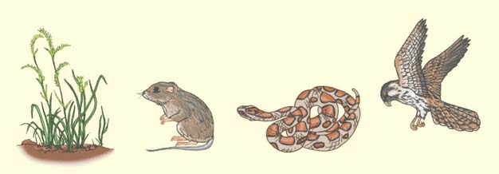

55 Ecosistemas y la biosfera
1196
CONCEPTOS CLAVE
55.1 El estudio del contenido de energía de los diferentes niveles trófi cos aporta conocimiento sobre cuánta energía fl uye a través de los componentes bióticos y abióticos de los ecosistemas. 55.2 Carbono, nitrógeno, agua y otros materiales circulan por las partes biótica y abiótica de los ecosistemas. 55.3 El ambiente abiótico, que incluye la radiación solar, la atmósfera, el océano, el clima y el fuego, ayuda a confi gurar la porción biótica de los ecosistemas. 55.4 Los ecólogos en ecosistemas se enfocan en los procesos químicos, físicos y biológicos de los ecosistemas a fi n de aprender cómo funcionan éstos.
C
asi aislado por completo de todo en el universo, excepto de la luz del Sol, el planeta Tierra ha sido comparado a menudo con una gran nave espacial cuyo sistema de sostén de la vida consta de las comunidades de organismos que la habitan, más la energía del Sol. Estos organismos producen oxígeno, traspasan energía y reciclan agua y minerales (nutrientes inorgánicos) con bastante efi cacia. Sin embargo, ninguno de estos procesos ecológicos sería posible sin el ambiente abiótico (inerte) de la nave espacial Tierra. En la medida en que el Sol calienta el planeta, alimenta el ciclo hidrológico (ocasiona precipitación), activa las corrientes del océano y los patrones de circulación atmosférica, y en buena medida produce el clima al que se han adaptado los organismos. El Sol también suministra la energía que casi todos los organismos usan para llevar a cabo procesos de vida.
Estanque de castor. Los castores construyeron una presa con ramas y lodo (extremo lejano del estanque), transformando un pequeño arroyo en un estanque. Fotografi ado en Shingle Creek, Utah.
Michael Stubben/Visuals Unlimited

Ecosistemas y la biosfera 1197
55.1 FLUJO DE ENERGÍA A TRAVÉS DE LOS ECOSISTEMAS
OBJETIVOS DE APRENDIZAJE
1 Resumir el concepto de fl ujo de energía a través de una red alimentaria. 2 Explicar pirámides usuales de números, biomasa y energía. 3 Distinguir entre productividad primaria bruta y productividad neta primaria.
El paso de energía en una dirección a través de un ecosistema se denomina fl ujo de energía . La energía entra en un ecosistema como energía radiante (luz solar), de la cual una pequeña porción (menos de 1%) es atrapada y usada por los productores durante la fotosíntesis. La energía, ahora en forma química, es almacenada en los enlaces de moléculas orgánicas (que contienen carbono) como la glucosa. Cuando la respiración celular descompone estas moléculas, la energía se vuelve disponible (en forma de ATP) para realizar trabajo, como reparar tejidos, producir calor corporal, moverse o reproducirse. A medida que se realiza trabajo, la energía escapa del organismo y se disipa en forma de calor. Finalmente, esta energía calorífi ca se irradia hacia el espacio. Así, una vez que un organismo ha usado energía, ésta deja de estar disponible para su reutilización ( FIGURA 55-1 ). (Vea también el análisis de la segunda ley de la termodinámica en el capítulo 7). En un ecosistema, el fl ujo de energía ocurre en cadenas alimentarias , en las que la energía pasa de un organismo al siguiente en una
Las comunidades individuales y sus ambientes abióticos son ecosistemas , que son las unidades básicas de la ecología. Un ecosistema abarca todas las interacciones entre los organismos que viven juntos en un sitio particular, y entre dichos organismos y sus ambientes abióticos. La ecología del ecosistema es un subcampo de la ecología que estudia el fl ujo de energía y el reciclaje de productos químicos entre las partes biótica y abiótica que interactúan en un ecosistema. Las interacciones de un ecosistema son complicadas porque cada organismo responde no sólo a los otros organismos, sino a condiciones en la atmósfera, el suelo y el agua. A su vez, los organismos ejercen un efecto en el ambiente abiótico, como cuando una presa hecha por castores crea un estanque en una zona que antes era forestal (vea la fotografía). El estanque se forma a medida que el castor construye un refugio seguro contra los depredadores. Sin embargo, la presa del castor también regula el fl ujo de agua hacia la corriente o río; retiene agua durante los períodos de lluvia y libera una cantidad controlada de agua a lo largo del año, incluso durante períodos de sequía. Así como las comunidades, los ecosistemas varían en tamaño, carecen de límites precisos y están alojados en ecosistemas más grandes. El ecosistema más grande de la Tierra es la biosfera, que consta de todas las comunidades de la Tierra y sus interacciones y relaciones con el ambiente abiótico del planeta: su agua, suelo, rocas y atmósfera.
Los ecólogos adquieren conocimientos sobre la manera en que funcionan los ecosistemas al analizar el fl ujo de energía y el contenido de energía de cada nivel trófi co.
Calor Calor Calor Calor Calor
Primer nivel trófico: productores
Segundo nivel trófico: consumidores primarios
Tercer nivel trófico: consumidores secundarios
Cuarto nivel trófico: consumidores terciarios
Descomponedores (saprótrofos)
Energía proveniente del Sol
FIGURA 55-1 Animada Flujo de energía a través de ecosistemas La energía entra en los ecosistemas desde una fuente externa (el Sol) y sale como pérdida de calor.
PUNTO CLAVE

1198 Capítulo 55
de cadenas alimentarias interconectadas, es un modelo más real del fl ujo de energía y materiales a través de los ecosistemas ( FIGURA 55-2 ). Las redes alimentarias están divididas en niveles trófi cos (del griego tropho, que signifi ca “nutrimento”). Los productores (organismos que realizan la fotosíntesis) ocupan el primer nivel trófi co; los consumidores primarios, el segundo; los consumidores secundarios (carnívoros), el tercero, y así sucesivamente (vea la fi gura 55-1). Debido a que las cadenas y redes alimentarias son descripciones de “quién se come a quién”, indican los efectos negativos que los depredadores tienen sobre su presa. Por ejemplo, considere una simple cadena
secuencia. Los productores primarios , también denominados autótrofos , o simplemente productores, constituyen el principio de la cadena alimentaria al capturar la energía solar mediante la fotosíntesis. Los productores, al incorporar a su propia biomasa (materia viviente) los productos químicos que elaboran, se vuelven recursos alimentarios potenciales para otros organismos. Las plantas son los productores más importantes en la tierra, mientras las algas y las cianobacterias son productores importantes en ambientes acuáticos. Todos los otros organismos en una comunidad son consumidores , también denominados heterótrofos, que extraen energía de las moléculas orgánicas producidas por otros organismos. Los herbívoros son consumidores que comen plantas, de las cuales obtienen la energía química derivada de las moléculas de los productores y los materiales de construcción que usan para generar sus propios tejidos. Los herbívoros son, a su vez, devorados por carnívoros , que cosechan la energía almacenada en las moléculas de los herbívoros. Otros consumidores, llamados omnívoros , comen una variedad de organismos, tanto vegetales como animales. Algunos consumidores, denominados consumidores de detritus o detritívoros , comen detritos, que es materia orgánica muerta que incluye cadáveres, hojarasca y heces. Los consumidores de detritos y los descomponedores microbianos destruyen organismos muertos y productos de desecho. Los descomponedores , también denominados saprótrofos , incluyen heterótrofos microbianos que se abastecen de energía al descomponer las moléculas orgánicas en los restos (cadáveres y desechos corporales) de todos los miembros de la cadena alimentaria. En términos generales liberan moléculas orgánicas simples, como bióxido de carbono y sales minerales, que pueden ser reutilizadas por los productores. La mayoría de las bacterias y hongos son descomponedores importantes. Las cadenas alimentarias simples como la que se acaba de describir ocurren rara vez en la naturaleza porque pocos organismos comen sólo un tipo, o son devorados por un solo tipo, de organismo. Más a menudo, el fl ujo de energía y materiales a través de los ecosistemas se lleva a cabo en concordancia con un intervalo de opciones alimentarias para cada organismo. En un ecosistema de complejidad promedio son posibles cientos de vías alternativas. Así, una red alimentaria , que es un complejo
En las cadenas alimentarias de todos los ecosistemas, excepto en los más simples, es demasiado complicado describir todas las especies y relaciones presentes en la realidad. Los diagramas de redes alimentarias rara vez toman en cuenta que algunos vínculos son intensos y otros son débiles. Además, las cadenas alimentarias cambian con el tiempo, con adiciones y eliminaciones de vínculos.
FIGURA 55-2 Animada Una cadena alimentaria en la frontera de un bosque caducifolio oriental Este diagrama está bastante simplifi cado comparado con lo que en realidad ocurre en la naturaleza.
PUNTO CLAVE
Ecosistemas y la biosfera 1199
Un árbol proporciona alimento para miles de insectos que comen hojas, por ejemplo. Las pirámides de números son de utilidad limitada porque no indican la biomasa de los organismos en cada nivel ni la cantidad de energía transferida de un nivel a otro. Una pirámide de biomasa ilustra la biomasa total en cada nivel trófi co sucesivo. La biomasa es una estimación cuantitativa de la masa total, o cantidad, de materia viviente; indica la cantidad de energía fi ja en un momento particular. Las unidades de medición de la biomasa varían; la biomasa puede ser representada como volumen total, peso seco o peso vivo. En general, estas pirámides ilustran la reducción progresiva de biomasa en niveles trófi cos sucesivos ( FIGURA 55-3a ). En el supuesto de una reducción de biomasa promedio de alrededor de 90% para cada nivel trófi co, 10,000 kg de hierba deben mantener 1000 kg de saltamontes, que a su vez mantienen a 100 kg de ranas. (La reducción de 90% en la biomasa es una aproximación; la verdadera reducción de biomasa de un nivel trófi co al siguiente varía ampliamente). Si se sigue esta lógica, la biomasa de consumidores de ranas (como las serpientes) podría pesar, cuando mucho, sólo alrededor de 10 kg. Con base en este breve ejercicio, puede verse que aunque los carnívoros no comen productores, se requiere una gran biomasa de productores para mantener a los carnívoros en una red alimentaria. Algunas veces se encuentra una pirámide de biomasa invertida en la que los consumidores primarios superan a los productores ( FIGURA
55-3b ). En estos casos, los herbívoros, como peces y zooplancton (protozoos, crustáceos pequeños y etapas inmaduras de muchos animales acuáticos), consumen grandes cantidades de productores, que suelen ser algas unicelulares de vida corta y que se reproducen con rapidez. Por tanto, aunque en cualquier punto en el tiempo hay relativamente pocas algas, la tasa de producción de biomasa de los consumidores primarios es mucho menor que la de los productores. Una pirámide de energía indica el contenido de energía, a menudo expresado como kilocalorías por metro cuadrado por año, de la biomasa de cada nivel trófi co. Un método común que usan los ecólogos para medir el contenido de energía consiste en quemar una muestra simple de tejido en un calorímetro; el calor liberado durante la combustión se mide para determinar el contenido de energía del material orgánico en la muestra. Las pirámides de energía siempre tienen bases grandes y se hacen progresivamente más pequeñas a través de niveles trófi cos para mostrar que la mayor parte de la energía se disipa hacia el ambiente cuando hay una transición de un nivel trófi co al siguiente. Menos energía llega a cada nivel trófi co sucesivo desde el nivel inferior porque los organismos
alimentaria: hierba ¡ ratón de campo ¡ búho. El búho, que mata y come ratones, obviamente ejerce un efecto negativo sobre la población de ratones; de manera semejante, el ratón de campo, que come semillas de la hierba, reduce la población de ésta. Un nivel trófi co en una red alimentaria también infl uye en otros niveles trófi cos con los que no está relacionado directamente. Los productores y los carnívoros superiores no ejercen efectos directos entre sí; sin embargo, cada uno afecta indirectamente al otro. En el presente ejemplo, el búho ayuda a la hierba al mantener bajo control la población de ratones que comen semillas. En forma semejante, la hierba benefi cia a los búhos al mantener una población de ratones de la que se alimenta la población de búhos. Estas interacciones indirectas pueden ser tan importantes en la dinámica de una red alimentaria como las interacciones directas depredador-presa. La cuestión más importante por recordar sobre el fl ujo de energía en los ecosistemas es que es lineal, o unidireccional. Es decir, la energía se desplaza a lo largo de una red alimentaria de un nivel trófi co al siguiente. Sin embargo, una vez que un organismo ha usado energía, la pierde en forma de calor y deja de estar disponible para cualquier otro organismo en el ecosistema.
Las pirámides ecológicas ilustran la manera en que trabajan los ecosistemas
Algunas veces los ecólogos comparan los niveles trófi cos al determinar el número de organismos, la biomasa, o la energía relativa encontrada en cada nivel. Esta información se presenta gráfi camente como pirámides ecológicas . La base de cada pirámide ecológica representa a los productores, el siguiente nivel son los consumidores primarios (herbívoros), el nivel arriba de éste son los consumidores secundarios (carnívoros) y así sucesivamente. El área relativa de cada barra de la pirámide es proporcional a lo que se está demostrando. Una pirámide de números muestra el número de organismos en cada nivel trófi co en un ecosistema dado, donde una mayor área ilustra números más grandes para esa sección de la pirámide. En la mayoría de las pirámides de números, menos organismos ocupan cada nivel trófi co sucesivo. Así, en los pastizales africanos el número de herbívoros, como cebras y ñus, es mayor que el número de carnívoros, como leones. Las pirámides de números invertidas, en las que los niveles trófi cos superiores tienen más organismos que los niveles trófi cos inferiores, a menudo se observan entre descomponedores, parásitos e insectos herbívoros.
Una pirámide de biomasa para un bosque tropical en Panamá.
Una pirámide de biomasa invertida, como la del plancton en el Canal de la Mancha, ocurre cuando un nivel trófico inferior altamente productivo experimenta elevadas tasas de productividad. El plancton está constituido principalmente por algas y animales microscópicos que flotan libremente.
Saprótrofos (10) Consumidores primarios (4) Productores (40,000)
Consumidores secundarios (1)
Consumidores primarios (21)
Productores (4) FIGURA 55-3 Pirámides de biomasa Estas pirámides se basan en la biomasa en cada nivel trófi co y por lo general tienen forma piramidal con una gran base y áreas progresivamente menores para cada nivel trófi co sucesivo. Los valores de la biomasa están en gramos de peso seco por metro cuadrado. ( a , b , adaptados de Odum, E. P. Fundamentals of Ecology , 3a. ed., W. B. Saunders Company, Filadelfi a, 1971, y se basan en estudios de F. B. Golley y G. I. Child [ a ] y H. W. Harvey [ b ]).
1200 Capítulo 55
energía fi jada por fotosíntesis por metro cuadrado por año) o como peso seco (es decir, gramos de carbono incorporados en el tejido por metro cuadrado por año). A la larga, los herbívoros y otros consumidores utilizan toda la producción neta primaria de una planta. ¿Qué ocurre con esta energía? Considere la transferencia de producción neta primaria de una planta a un ciervo que se la come. Mucha de la energía almacenada en la materia de la planta que consume el ciervo, alrededor de 25%, no es digerida y se pierde en sus heces. (Esta energía no se pierde del ecosistema porque será utilizada por los detritívoros y los descomponedores; sin embargo, es desperdiciada desde el punto de vista del ciervo). Tal vez 55% de la energía que el ciervo toma como comida es liberada durante la respiración celular y usada para realizar trabajo como contracción muscular y mantener y reparar el cuerpo del ciervo. La energía restante, menos de 20%, está disponible para producir nueva biomasa; es decir, nuevos tejidos. Esta energía neta disponible para la producción de biomasa por el organismo consumidor se denomina productividad secundaria . La productividad secundaria de un ecosistema está basada en su productividad primaria. Muchos factores pueden interactuar para determinar la productividad primaria. Algunas plantas son más efi caces que otras para fi jar carbono. Los factores ambientales también son importantes, entre éstos se incluyen la disponibilidad de energía solar, minerales y agua; otros factores climáticos, el grado de madurez de la comunidad y la severidad de la modifi cación humana del ambiente. Estos factores son difíciles de valorar, en particular a gran escala. El verano de 2003, que fue extremadamente caluroso y seco en Europa, signifi có para los ecólogos una posibilidad de medir los cambios en la productividad primaria en respuesta a estas condiciones poco comunes. Con base en sus mediciones, estiman que la PPB en toda Europa se redujo 30% como resultado del calor y la sequía. Los ecosistemas difi eren notablemente en sus productividades primarias ( FIGURA 55-5 y TABLA 55-1 ). En tierra, los bosques tropicales tienen la mayor productividad, tal vez como resultado de la abundancia de lluvias, temperaturas cálidas e intensa luz solar. Como podría esperarse, la tundra, debido a su corta estación de crecimiento frío, y los desiertos, debido a su falta de precipitación pluvial, son los ecosistemas terrestres menos productivos. En ecosistemas con temperaturas anuales similares
en el nivel inferior usan algo de la energía para realizar trabajo y algo de ésta se pierde como calor ( FIGURA 55-4 ). (Recuerde que ningún proceso biológico es 100% efi caz). La segunda ley de la termodinámica explica por qué hay pocos niveles trófi cos: las pirámides de energía son cortas debido a la notoria reducción del contenido de energía que ocurre en cada nivel trófi co sucesivo.
Los ecosistemas varían en productividad
La productividad primaria bruta (PPB) de un ecosistema es la razón a la que se captura energía durante la fotosíntesis. 1 Así, la PPB es la cantidad total de energía fotosintética capturada en un período dado. Por supuesto, las plantas y otros productores deben respirar para contar con energía para sus procesos de vida, y la respiración celular actúa como un drenaje en la producción fotosintética. La energía que queda en los tejidos vegetales después de que ha ocurrido la respiración celular se denomina productividad neta primaria (PNP) . Es decir, la PNP es la cantidad de biomasa (la energía almacenada en los tejidos vegetales) encontrada en exceso después de que parte de ella ha sido descompuesta por la respiración celular de un vegetal para actividades cotidianas normales. La PNP representa la razón a la cual esta materia orgánica es realmente incorporada en los tejidos vegetales para producir crecimiento.
productividad neta primaria (crecimiento del vegetal por área unitaria por tiempo unitario)
productividad primaria bruta (fotosíntesis total por área unitaria por tiempo unitario)
respiración vegetal
(por área unitaria por tiempo unitario)
Sólo la energía representada por la productividad neta primaria está disponible para los consumidores, y de esta energía sólo una porción es utilizada por éstos. Tanto la PPB como la PNP se expresan como energía por área unitaria por tiempo unitario (por ejemplo, kilocalorías de
Productores (20,810)
Consumidores primarios (3368)
Consumidores secundarios (383)
Consumidores terciarios (21)
Saprótrofos (5060)
FIGURA 55-4 Pirámide de energía Una pirámide de energía para Silver Springs, Florida, representa el fl ujo de energía, la base funcional de la estructura del ecosistema. Los valores de energía están dados en kilocalorías por metro cuadrado por año. Observe la pérdida sustancial de energía utilizable de un nivel trófi co al siguiente. El ecosistema de Silver Springs es complejo, pero la cinta de hierba (productores), los caracoles con concha en forma de espiral (consumidores primarios), las jóvenes tortugas de río (consumidores secundarios), los lucios (peces; consumidores terciarios) y las bacterias y hongos (saprótrofos) son organismos representativos. Cuando las tortugas de río son jóvenes, son carnívoras y consumen caracoles, insectos acuáticos y gusanos; como adultas, son herbívoras. (Basado en Odum, H. T. “Trophic Structure and Productivity of Silver Springs, Florida”. Ecological Monographs , vol. 27, 1957).
1 Las productividades bruta y neta se denominan como primarias porque las plantas y otros productores ocupan la primera posición en las redes alimentarias.
Ecosistemas y la biosfera 1201
A medida que la productividad primaria aumenta, disminuye la riqueza de especies
Los ecólogos han observado que la riqueza de especies de un ecosistema disminuye con el aumento de la productividad. Por ejemplo, las profundidades pobres en recursos de la planicie abisal del océano Atlántico tienen más riqueza de especies que las aguas superfi ciales productivas próximas a las costas. Los ecólogos están diseñando experimentos para ayudar a explicar el patrón, que ha sido documentado con roedores en Israel, aves en Sudamérica y grandes mamíferos en África. Los modelos matemáticos de los ecosistemas sugieren que un ambiente menos productivo tiene una distribución de recursos por parches que reduce la competencia y permite la coexistencia de una mayor variedad de organismos. Las malas nuevas para la biodiversidad global es que los humanos enriquecen de manera constante el ambiente; por ejemplo, con aportaciones de nitrógeno y fósforo provenientes de residuos fósiles, fertilizantes y ganado. Este enriquecimiento continuo puede hacer de la Tierra un ecosistema cada vez más productivo, un desplazamiento que según algunos ecólogos podría costar al mundo una pérdida sustancial de riqueza de especies. (Otros factores que afectan la riqueza de especies se analizaron en el capítulo 54).
Los humanos consumen un porcentaje cada vez mayor de la productividad primaria mundial
Los humanos consumen mucho más de los recursos de la Tierra que cualquiera otra de los millones de especies animales. Peter Vitousek y colaboradores en la Universidad de Stanford calcularon en 1986 cuánto de la PNP mundial se apropia la economía humana. Cuando se toman en cuenta los impactos humanos directos e indirectos, Vitousek estimó que los humanos usan de 32% a 40% de la PNP terrestre anual. Desde 1986 los científi cos han realizado investigación adicional sobre la ecología mundial, lo que ha resultado en mejores conjuntos de datos. En 2001, Stuart Rojstaczer y colaboradores en la Universidad Duke usaron datos actuales basados en satélites para determinar una estimación conservadora de apropiación humana de la PNP terrestre anual de 32%. El mensaje de la investigación de Vitousek y Rojstaczer es simple. Esencialmente, el uso que los humanos hacen de la productividad global compite con las necesidades de energía de otras especies. El uso de
(como un bosque caducifolio, una pradera y un desierto templados), la disponibilidad del agua afecta la PNP. La disponibilidad de minerales esenciales como nitrógeno y fósforo también afecta la PNP. Los humedales (pantanos y marismas) conectan ambientes terrestres y marítimos y son extremadamente productivos. Los sistemas acuáticos más productivos son los lechos de algas, arrecifes de coral y estuarios. La falta de disponibilidad de minerales en la región iluminada por el Sol en mar abierto hace que esta área sea extremadamente improductiva, equivalente a un desierto acuático. Los ecosistemas terrestres y acuáticos más importantes de la Tierra se analizan en el capítulo 56.
FIGURA 55-5 Una medida de la productividad primaria de la Tierra Los datos son de un satélite lanzado como parte de la Mission to Planet Earth de la NASA en 1997. El satélite midió la cantidad de vida vegetal en tierra, así como la concentración de fi toplancton (algas) en el océano. En tierra la mayoría de las áreas productivas, como bosques tropicales, aparecen en color verde oscuro y los ecosistemas menos productivos (desiertos) son anaranjados. En el océano y otros ecosistemas acuáticos, las regiones más productivas son rojas, seguidas de los colores anaranjado, amarillo, verde y azul (el menos productivo). Para el área gris no hay datos disponibles.
Productividades netas primarias (PNP) para ecosistemas seleccionados
PNP promedio Ecosistema (g de materia seca/m 2 /año)
Lechos de algas y arrecifes de coral 2500
Bosques tropicales 2200
Pantanos y marismas 2000
Estuarios 1500
Bosque perennifolio templado 1300
Bosque caducifolio templado 1200
Sabana 900
Bosque boreal (nórdico) 800
Bosques y matorrales 700
Tierras agrícolas 650
Pastizales templados 600
Zonas de surgencia en el océano 500
Lago y arroyos 250
Tundra ártica y alpina 140
Mar abierto 125
Desierto y matorral semidesértico 90
Desierto extremo (roca, arena, hielo) 3
Fuente: basado en Whittaker, R. H. Communities and Ecosystems , 2a. ed. Macmillan, Nueva York, 1975.
TABLA 55-1
SEAWIFS Project, NASA/Goddard Space Flight Center and ORBIMAGE
1202 Capítulo 55
las redes alimentarias): su persistencia, bioacumulación y magnifi cación biológica. Algunas toxinas son extremadamente estables y pueden ser necesarios muchos años para descomponerlas a formas menos tóxicas. La persistencia de los pesticidas sintéticos y los productos químicos es un resultado de sus nuevas estructuras químicas. Estas toxinas se acumulan en el ambiente porque las formas de degradarlas no han evolucionado en descomponedores naturales como las bacterias. Cuando un organismo no metaboliza (descompone) o excreta una toxina persistente, ésta simplemente se almacena, usualmente en los tejidos grasos. Con el tiempo, el organismo puede acumular altas concentraciones de la toxina. La acumulación de una toxina así en el cuerpo de un organismo se conoce como bioacumulación . Los organismos en niveles trófi cos superiores en las redes alimentarias tienden a almacenar mayores concentraciones de toxinas bioacumuladas en sus cuerpos que los que se encuentran en los niveles inferiores. El incremento en concentración a medida que la toxina pasa por niveles sucesivos de la red alimentaria se conoce como magnifi cación biológica . Como un ejemplo de las características de concentración de las toxinas persistentes, considere una cadena alimentaria estudiada en una salina de Long Island que fue rociada con DDT durante varios años para controlar los mosquitos ( FIGURA 55-6 ). Aunque este ejemplo involucraba a un ave en la parte superior de la cadena alimentaria, es importante reconocer que todos los carnívoros superiores, desde los peces hasta los humanos, corren el riesgo de magnifi cación biológica de toxinas persistentes. Debido a este riesgo, los pesticidas autorizados en la actualidad han sido probados para asegurar que no persistan y se acumulen en el ambiente.
tal proporción de la productividad mundial podría contribuir a la pérdida, a través de la extinción o empobrecimiento genético, de muchas especies que desempeñan papeles únicos en el mantenimiento de ecosistemas funcionales. Resulta evidente que a estos niveles de consumo y explotación de los recursos de la Tierra, el crecimiento de la población humana amenaza la capacidad del planeta para mantener a todos sus ocupantes.
Cadenas alimentarias y venenos en el ambiente
Se ha visto cómo la energía fl uye a través de las cadenas alimentarias. Antes de dejar el análisis de éstas, se considerará cómo ciertas toxinas, incluidos algunos pesticidas, isótopos radiactivos, metales pesados como mercurio y productos químicos industriales como los bifenilos policlorados (PCB), entran y pasan a través de las cadenas alimentarias. El efecto del pesticida DDT sobre algunas especies de aves atrajo la atención al problema. Los halcones, pelícanos, águilas calvas, águilas pescadoras y muchas otras aves son sensibles a trazas de DDT en sus tejidos. Un cuerpo sustancial de evidencia científi ca indica que un efecto del DDT sobre estas aves es que sus huevos tienen cascarones extremadamente delgados y frágiles que suelen romperse durante la incubación, provocando la muerte de los polluelos. En 1962, la bióloga estadunidense Rachel Carson publicó Silent Spring , que aumentó la conciencia del público sobre los peligros del DDT y otros pesticidas. Después de 1972, el año en que el DDT fue prohibido en Estados Unidos, el éxito reproductivo de muchas aves mejoró gradualmente. El impacto del DDT sobre las aves es el resultado de tres características del insecticida (y de otras toxinas que ocasionan problemas en
EXPERIMENTO CLAVE
PREGUNTA: ¿El DDT exhibe magnifi cación biológica a medida que se mueve a través de una cadena alimentaria?
HIPÓTESIS: La concentración de DDT, un insecticida persistente, aumenta en cada nivel de una cadena alimentaria.
EXPERIMENTO: Los biólogos tomaron muestras de la concentración de DDT en varios organismos de una salina de Long Island.
Gaviota con anillo de identificación (75.5 ppm)
Pez aguja del Atlántico (2.07 ppm)
Anguila americana (0.28 ppm)
Camarón (0.16 ppm)
Plancton (0.04 ppm)
Consumidor terciario
NIVEL TRÓFICO CANTIDAD DE DDT EN EL TEJIDO
Consumidor secundario
Consumidor secundario
Consumidor primario
Productores, consumidores primarios
RESULTADOS Y CONCLUSIÓN: El nivel de DDT aumentó en los tejidos de varios organismos a medida que el insecticida se movía a través de la cadena alimentaria de productores a consumidores. Las gaviotas con anillo de identifi cación en la parte superior de la cadena alimentaria tenían aproximadamente 1 millón de veces más DDT en sus tejidos que la concentración de DDT en el agua (0.00005 ppm). (El plancton constaba de una mezcla de fi toplancton y zooplancton).
Fuente: con base en datos de Woodwell, G. M., C. F. Worster Jr. y P. A. Isaacson. “DDT Residues in an East Coast Estuary: A Case of Biological Concentration of a Persistent Insecticide”. Science , vol. 156, 12 de mayo de 1967.
FIGURA 55-6 Magnifi cación biológica del DDT (expresada en partes por millón) en una salina de Long Island
Ecosistemas y la biosfera 1203
Se analizarán cuatro ciclos biogeoquímicos diferentes de la materia: carbono, nitrógeno, fósforo y agua, como representativos de todos los ciclos biogeoquímicos. Estos cuatro ciclos son particularmente importantes para los organismos porque implican materiales usados para elaborar los componentes químicos de las células.
El bióxido de carbono es la molécula pivote en el ciclo del carbono
Las proteínas, ácidos nucleicos, lípidos, carbohidratos y otras moléculas esenciales para la vida contienen carbono. El carbono está presente en la atmósfera como el gas bióxido de carbono (CO 2 ), que constituye alrededor de 0.04% de la atmósfera. También está presente en el océano y el agua dulce como bióxido de carbono disuelto; es decir, carbonato (CO 3 2 − ) y bicarbonato (HCO 3 − ), otras formas de carbono inorgánico disuelto, y carbono orgánico disuelto derivado de procesos de decaimiento. El carbono también está presente en rocas como la caliza (CaCO 3 ). El movimiento mundial del carbono entre el ambiente abiótico, incluyendo la atmósfera y el océano, y los organismos se conoce como ciclo del carbono ( FIGURA 55-7 ). Durante la fotosíntesis, las plantas, algas y cianobacterias retiran bióxido de carbono del aire y lo fi jan, o incorporan, en compuestos orgánicos como la glucosa. Las plantas usan gran parte de la glucosa para hacer celulosa, almidón, aminoácidos, ácidos nucleicos y otros compuestos. Muchos de estos compuestos se usan como combustible para la respiración celular por los productores que los elaboran, por un consu-
Repaso
■ ¿Cómo fluye la energía a través de una red alimentaria como un bosque caducifolio?
■ ¿Qué son los niveles tróficos y cómo están relacionados con las pirámides ecológicas?
■ ¿En qué se diferencian la productividad primaria bruta (PPB) y la productividad neta primaria (PNP)?
55.2 CICLOS DE LA MATERIA EN LOS ECOSISTEMAS
OBJETIVO DE APRENDIZAJE
4 Describir los pasos principales en cada uno de estos ciclos biogeoquímicos: carbono, nitrógeno, fósforo y los ciclos hidrológicos.
La materia se mueve en numerosos ciclos desde una parte de un ecosistema a otra; es decir, de un organismo a otro (en cadenas alimentarias) y de organismos vivos al ambiente abiótico y de regreso. Estos ciclos de materia se denominan ciclos biogeoquímicos porque implican interacciones biológicas, geológicas y químicas. Para todos los efectos prácticos, la materia no puede escapar de los límites de la Tierra. Los materiales usados por los organismos no pueden “perderse”, aunque esta materia puede terminar en sitios fuera del alcance de los organismos durante un largo período. En términos generales, la materia se reutiliza y a menudo se recicla tanto dentro de los ecosistemas como entre éstos.
Aire (CO 2 ) 750
Respiración vegetal y animal
Respiración de microorganismos en el suelo Descomposición Fotosíntesis por plantas terrestres 560
Erosión de piedra caliza para formar CO 2 disuelto Entierro y compactación de conchas marinas para formar roca (caliza)
CO 2 disuelto en agua 38,000 Restos de vegetales parcialmente descompuestos
Suelo 1500
Restos de plancton marino Carbón
Petróleo
Gas natural Carbón
Combustión (humana y natural) 6
6 4 3
1
5
7
2 2 2
FIGURA 55-7 Animada Diagrama simplifi cado del ciclo del carbono Todo el carbono de la Tierra (excepto por una fracción minúscula) que se estima en 10 23 g está enterrado en rocas sedimentarias y depósitos de combustibles fósiles. Los valores que se muestran para algunos de los grupos activos en el balance global de carbono están expresados como 10 15 g de carbono. Por ejemplo, se estima que el suelo contiene 1500 × 10 15 g de carbono. (Valores tomados de Schlesinger, W. H. Biogeochemistry: An Analysis of Global Change , 2a. ed., Academic Press, San Diego, 1997 y varias otras fuentes).
1204 Capítulo 55
que producen esqueletos y conchas de carbonato de calcio (CaCO 3 ), el cual se disuelven en presencia de ácido. El nivel de CO 2 atmosférico se incrementó notablemente a principios de la segunda mitad del siglo xx (vea la fi gura 57-16) y este aumento de CO 2 parece haber iniciado los cambios inducidos por los humanos en el clima mundial. El cambio en el clima mundial puede resultar en un aumento del nivel del mar, cambios en los patrones de precipitación pluvial, muerte de bosques, extinción de organismos y problemas para la agricultura. Podría forzar al desplazamiento de miles e incluso millones de personas, en particular de las zonas costeras. (En el capítulo 57 se presenta un análisis más detallado del aumento del CO 2 atmosférico y del impacto potencial del cambio en el clima mundial).
Las bacterias son esenciales para el ciclo del nitrógeno
El nitrógeno es crucial para todos los organismos porque es un componente esencial de las proteínas, los ácidos nucleicos y la clorofi la. Debido a que la atmósfera de la Tierra es aproximadamente 78% de nitrógeno gaseoso (N 2 ), podría parecer imposible una reducción del nitrógeno para los organismos. Sin embargo, el nitrógeno molecular es tan estable que no se combina fácilmente con otros elementos. En consecuencia, la molécula de N 2 debe descomponerse antes de que los átomos de nitrógeno se combinen con otros elementos para formar proteínas, ácidos nucleicos y clorofi la. Las reacciones químicas que descomponen el N 2 y combinan el nitrógeno con otros elementos requieren bastante energía. El ciclo del nitrógeno , en el que este elemento se recicla entre el ambiente abiótico y los organismos, consta de cinco pasos: fi jación del nitrógeno, nitrifi cación, asimilación, amonifi cación y desnitrifación ( FI-
GURA 55-8 ). Las bacterias están involucradas exclusivamente en estos pasos, excepto en la asimilación. El primer paso en el ciclo, la fi jación del nitrógeno , de carácter biológico, implica la conversión del nitrógeno gaseoso (N 2 ) en amoniaco (NH 3 ). Este proceso fi ja el nitrógeno en una forma que los organismos pueden usar. La combustión, la acción volcánica, las descargas eléctricas y los procesos industriales también fi jan el nitrógeno como nitrato (NO 3 – ). Las bacterias fi jadoras de nitrógeno , incluyendo las cianobacterias y otras bacterias de existencia libre y simbióticas, llevan a cabo la fi jación de nitrógeno en el suelo y en ambientes acuáticos. Las bacterias fi jadoras de nitrógeno emplean una enzima denominada nitrogenasa para descomponer el nitrógeno molecular y combinar los átomos de nitrógeno resultantes con el hidrógeno. Puesto que la nitrogenasa sólo funciona en ausencia de oxígeno, las bacterias que fi jan nitrógeno aíslan la enzima del oxígeno de alguna manera. Algunas bacterias fi jadoras de nitrógeno viven bajo capas de limo excluyentes de oxígeno sobre las raíces de varias especies de plantas. Otras bacterias fi jadoras de nitrógeno importantes, del género Rhizobium , viven en protuberancias excluyentes de oxígeno, o nódulos , sobre las raíces de legumbres como frijoles y chícharos, y en algunas plantas leñosas ( FIGURA 55-9 ). En ambientes acuáticos, las cianobacterias llevan a cabo casi toda la fi jación de nitrógeno. Las cianobacterias fi lamentosas poseen unas células especiales excluyentes de oxígeno denominadas heterocistos que funcionan para fi jar el nitrógeno. Algunos helechos acuáticos tienen cavidades en las que viven las cianobacterias, de manera comparable a la forma en que el Rhizobium vive en nódulos en las raíces de legumbres. Otras cianobacterias fi jan nitrógeno en asociación simbiótica con cicadas y otras plantas terrestres, o como el compañero fotosintético de ciertos líquenes.
midor que come al productor o por un descomponedor que desintegra los restos del productor o del consumidor. El proceso de la respiración celular devuelve el bióxido de carbono a la atmósfera. Un ciclo del carbono semejante ocurre en ecosistemas acuáticos entre organismos acuáticos y bióxido de carbono disuelto en el agua (no se muestra en la fi gura 55-7). Algunas veces el carbono en las moléculas biológicas no se recicla de vuelta al ambiente abiótico durante largo tiempo. El carbono almacenado en la madera de los árboles puede permanecer por varios cientos de años e incluso más. También, hace millones de años se formaron vastos lechos de carbón a partir de los cuerpos de árboles antiguos que fueron sepultados y sometidos a condiciones anaerobias antes de desintegrarse por completo. De manera semejante, es probable que los aceites de organismos marinos unicelulares dieran origen a depósitos subterráneos de petróleo y gas natural que se acumularon en el pasado geológico. Carbón, petróleo y gas natural, denominados combustibles fósiles porque se formaron a partir de los restos de organismos antiguos, son vastos depósitos de compuestos de carbono, los productos fi nales de la fotosíntesis que ocurrió hace millones de años. El proceso de quema, o combustión, puede regresar a la atmósfera el carbono contenido en el carbón, petróleo, gas natural y madera. En la combustión, las moléculas orgánicas se oxidan con rapidez (se combinan con oxígeno) y se convierten en bióxido de carbono y agua con una liberación concomitante de luz y calor. Una cantidad todavía mayor de carbono que ha permanecido almacenado durante millones de años está incorporado en las conchas de organismos marinos. Cuando estos organismos mueren, sus conchas se hunden en el fondo del océano y son cubiertas por sedimentos, formando depósitos de lecho marino de varios miles de metros de espesor. Los depósitos terminan por ser cementados entre sí formando piedra caliza, una roca sedimentaria. La corteza terrestre es dinámicamente activa y a lo largo de millones de años la roca sedimentaria en el fondo del piso marino puede emerger para formar tierras superfi ciales. Cuando el proceso de levantamiento geológico expone la piedra caliza, un proceso de desgaste químico y físico la erosiona lentamente. Esto devuelve el carbono al agua y a la atmósfera, donde queda disponible para participar de nuevo en el ciclo del carbono.
Las actividades humanas han perturbado la existencia mundial de carbono
Antes de la Revolución Industrial, alrededor de 1750, el ciclo mundial del carbono estaba en estado estable. Enormes cantidades de carbono se movían hacia la atmósfera, el océano y los ecosistemas terrestres y desde éstos, pero estos movimientos dentro del ciclo global del carbono se cancelaban entre sí. Desde 1750, la sociedad industrial ha requerido mucha energía y se han quemado cantidades cada vez mayores de combustibles fósiles; carbón, petróleo y gas natural, para obtener dicha energía. Esta tendencia, junto con una mayor combustión de madera como combustible y la quema de grandes secciones de bosques tropicales, ha liberado CO 2 a la atmósfera a un ritmo más grande del que el ciclo del carbono puede manipular. El océano de la Tierra absorbe la mayor parte de este exceso de CO 2 . En el océano algo del CO 2 disuelto se convierte en ácido carbónico (H 2 CO 3 ) que vuelve ácidas las aguas oceánicas superfi ciales. Según la investigación reportada en 2003 en la revista Nature , el pH de las aguas superfi ciales modernas es aproximadamente 0.1 unidad menor de lo que era en la época preindustrial y los modelos pronostican hasta 1.4 unidades de acidifi cación adicional durante los próximos 300 años. La acidifi cación del océano daña a los organismos marinos, en particular a aquellos
Ecosistemas y la biosfera 1205
El segundo paso en el ciclo del nitrógeno es la nitrifi cación (vea la fi gura 55-8), la conversión de amoniaco (NH 3 ) o amonio (NH 4 + ), formados cuando el agua reacciona con amoniaco, en nitrato (NO 3 − ). Las bacterias del suelo son responsables del proceso bifásico de nitrifi cación, que provee energía a estas bacterias, denominadas bacterias nitrifi cadoras . En el tercer paso, la asimilación , las raíces absorben amoniaco (NH 3 ), amonio (NH 4 + ) o nitrato (NO 3 − ) formados por fi jación de nitrógeno y nitrifi cación, e incorporan el nitrógeno en proteínas, ácidos nucleicos y clorofi la. Cuando los animales consumen tejidos vegetales, asimilan nitrógeno al tomar compuestos de nitrógeno vegetales y convertirlos en compuestos de nitrógeno animales. El cuarto paso, la amonifi cación , es la conversión de compuestos de nitrógeno orgánicos en amoniaco (NH 3 ) y amonio (NH 4 + ). La amonifi cación empieza cuando el organismo produce desechos que contienen nitrógeno como urea en orina y ácido úrico en los desechos de las aves (vea la fi gura 48-1). A medida que estas sustancias, junto con los compuestos de nitrógeno en los organismos muertos, se descomponen, el nitrógeno es liberado hacia el ambiente abiótico como amoniaco (NH 3 ). Las bacterias que llevan a cabo la amonifi cación en los ambientes terrestre y acuático se denominan bacterias amonifi cadoras . La mayoría del nitrógeno disponible en el suelo se deriva del nitrógeno orgánico reciclado por amonifi cación. El quinto paso del ciclo del nitrógeno es la desnitrifi cación , la reducción de nitrato (NO 3 − ) en nitrógeno gaseoso (N 2 ). Las bacterias desnitrifi cadoras invierten la acción de las bacterias fi jadoras de nitrógeno y nitrifi cadoras al devolver el nitrógeno a la atmósfera como ni-
Nitrógeno atmosférico (N 2 )
Fijación de nitrógeno por actividad humana 100
Fijación biológica de nitrógeno (bacterias fijadoras de nitrógeno en nódulos de raíces y en el suelo) 140
Amoniaco (NH 3 )
y amonio (NH 4 )
Nitrificación (bacterias nitrificadoras)
Reciclaje interno (nitrificación, asimilación, amonificación en tierra) 1200
Nitrato (NO 3 )
Descomposición (amonificación por bacterias amonificadoras)
Asimilación (nitratos, amoniaco o amonio absorbidos por las raíces y usadas para elaborar compuestos orgánicos)
Desnitrificación (bacterias desnitrificadoras) ≤ 200
Proteínas vegetales y animales
−
2
3
5
1 1
4
FIGURA 55-8 Animada Diagrama simplifi cado del ciclo del nitrógeno La mayor cantidad de nitrógeno, estimada en 3.9 × 10 21 g, está en la atmósfera. Los valores mostrados para fl ujos de nitrógeno seleccionados en el balance global de nitrógeno están expresados como 10 12 g de nitrógeno por año y representan valores terrestres. Por ejemplo, se estima que cada año los humanos fi jan 100 × 10 12 g de nitrógeno. (Valores tomados de Schlesinger, W. H. Biogeochemistry: An Analysis of Global Change , 2a. ed., Academic Press, San Diego, 1997 y varias otras fuentes).
Nódulo
Hugh Spencer/Photo Researchers, Inc.
FIGURA 55-9 Nódulos de raíces y fi jación de nitrógeno Los nódulos en las raíces de una planta de chícharo proveen un ambiente libre de oxígeno para las bacterias Rhizobium fi jadoras de nitrógeno que viven en aquéllas.
1206 Capítulo 55
encerrado en los compuestos orgánicos es modifi cado químicamente y traspasado a la atmósfera. Además, la alta temperatura de la combustión convierte algo del nitrógeno atmosférico en óxidos de nitrógeno . El escape de los automóviles es una de las fuentes más importantes de óxidos de nitrógeno que son un ingrediente necesario en la producción de smog fotoquímico , una mezcla de varios contaminantes del aire que dañan los tejidos vegetales, irritan los ojos y provocan enfermedades respiratorias en los humanos. Los óxidos de nitrógeno también reaccionan con el agua en la atmósfera para formar ácido nítrico (HNO 3 ) y ácido nitroso (HNO 2 ). Una vez que éstos y otros ácidos salen de la atmósfera como deposición ácida , disminuyen el pH de las aguas superfi ciales (lagos y corrientes) y los suelos. La deposición ácida ha sido relacionada con la declinación en las poblaciones de animales en los ecosistemas acuáticos. En la tierra, la deposición ácida altera la composición química del suelo; ciertos minerales esenciales, como calcio y potasio, son deslavados del suelo, por lo que no están disponibles para los vegetales. El óxido nitroso (N 2 O), uno de los óxidos de nitrógeno, retiene calor en la atmósfera (como el CO 2 ), promoviendo así el cambio en el clima mundial. El óxido nitroso también contribuye al agotamiento del ozono en la estratosfera. (Vea en el capítulo 2 un análisis de los ácidos y el pH, y en el capítulo 57 un análisis del cambio en el clima mundial y del agotamiento del ozono estratosférico).
El ciclo del fósforo carece de un componente gaseoso
El fósforo no existe en estado gaseoso, por lo que no entra a la atmósfera. En el ciclo del fósforo , éste se recicla desde la tierra hasta los sedimentos en el océano y regresa a la tierra ( FIGURA 55-10 ). A medida que el agua corre sobre las rocas que contienen fósforo, gradualmente erosiona su superfi cie y se lleva el fosfato inorgánico (PO 4 3 − ). La erosión de rocas de fósforo libera fosfato hacia el suelo, donde es tomado por las raíces en forma de fosfatos inorgánicos. Una vez en las células, los fosfatos se incorporan en una variedad de moléculas
trógeno gaseoso. Las bacterias desnitrifi cadoras son anaerobias y por tanto viven y crecen mejor donde hay poco o ningún oxígeno. Por ejemplo, se encuentran profundamente en el suelo cerca de la capa freática, un ambiente que está casi libre de oxígeno.
Las actividades humanas han cambiado el balance mundial de nitrógeno
Las actividades humanas han perturbado el balance del ciclo mundial de nitrógeno. Durante el siglo xx, los humanos han duplicado con creces la cantidad de nitrógeno fi jo (el cual ha sido combinado químicamente con hidrógeno, oxígeno o carbono) que entra al ciclo mundial de nitrógeno. El exceso de este elemento está alterando gravemente muchos ecosistemas terrestres y acuáticos. A partir del nitrógeno gaseoso se producen grandes cantidades de fertilizante nitrogenado para la agricultura. El uso creciente del fertilizante ha resultado en mayores cosechas, aunque hay impactos ambientales negativos derivados del nitrógeno producido por los humanos. El fertilizante de nitrógeno es extremadamente móvil y se transfi ere con facilidad de la tierra a los ríos, a los estuarios y al océano. Así, el uso excesivo de fertilizantes comerciales en la tierra ocasiona problemas en la calidad del agua que pueden ayudar a explicar el descenso a largo plazo en gran parte de la pesca costera. La cantidad de nitrato o amonio en la mayoría de los ecosistemas acuáticos está restringida y limita el crecimiento de las algas. La lluvia arrastra el fertilizante hacia ríos y lagos, donde estimula el crecimiento de algas, algunas de las cuales son tóxicas. A medida que éstas mueren, su descomposición por bacterias roba al agua el oxígeno disuelto, lo que a su vez provoca que otros organismos acuáticos, incluyendo muchos peces, se ahoguen. Los nitratos del fertilizante también se lixivian (se disuelven y deslavan) a través del suelo y contaminan el agua subterránea. Muchas personas que viven en zonas rurales beben agua subterránea, que es peligrosa cuando está contaminada por nitratos, en particular para los bebés y niños pequeños. Otra actividad humana que afecta el ciclo de nitrógeno es la combustión de combustibles fósiles. Cuando éstos son quemados, el nitrógeno
Rocas de fosfato
Enterramiento y compactación para formar roca
Procesos geológicos (p. ej., levantamiento)
Extracción de fosfato
Fertilizante que contiene fosfatos
Animales, cultivos
Reciclaje interno 60
Reciclaje interno 1000 Desechos y descomposición animales
Fosfatos del suelo 200,000
Erosión de minerales de fosfato de calcio
Fosfatos disueltos 90,000
Sedimentos marinos 4 x 10 9
Organismos marinos
Excreción y descomposición
Erosión
Rocas de fosfato 10,000 (explotables)
6
1
5
3
4
2
FIGURA 55-10 Animada Diagrama simplifi cado del ciclo del fósforo Se proporcionan algunos valores del balance mundial de fósforo, en unidades de 10 12 g de fósforo por año. Por ejemplo, se estima que cada año 60 × 10 12 g de fósforo se reciclan del suelo a organismos terrestres y de regreso al suelo. (Valores de Schlesinger, W. H. Biogeochemistry: An Analysis of Global Change , 2a. ed., Academic Press, San Diego, 1997 y varias otras fuentes).
Ecosistemas y la biosfera 1207
ral; es decir, inalteradas de alguna forma por los humanos. Las prácticas de desnudación de la tierra, como la tala forestal y la erosión de tierras agrícolas y residenciales acelera la pérdida de fósforo del suelo hacia los cursos de agua. El exceso de fósforo enriquece el agua, ocasionando la proliferación de algas que roban del agua el oxígeno disuelto. Para efectos prácticos, el fósforo que se lava de la tierra al océano se pierde de manera permanente del ciclo terrestre del fósforo (y del uso ulterior humano) porque permanece en el océano durante millones de años. Los ecólogos también están preocupados por la extracción de fósforo a un ritmo que no es sostenible. A su ritmo de uso actual, es probable que los depósitos de fósforo en Estados Unidos se agoten durante el siglo xxi.
El agua se mueve entre el océano, la tierra y la atmósfera en el ciclo hidrológico
La vida no sería posible sin agua, que constituye una parte sustancial de la masa de la mayoría de los organismos. Todas las especies, desde bacterias hasta vegetales y animales, usan el agua como medio para las reacciones químicas, así como para el transporte de materia dentro de las células y entre ellas. (Recuerde del capítulo 2 que el agua tiene muchas propiedades únicas que ayudan a conformar los continentes, moderar el clima y permitir que los organismos sobrevivan). En el ciclo hidrológico , el agua circula de manera continua del océano a la atmósfera, a la tierra y de regreso al océano ( FIGURA 55-11 ). El agua se mueve de la atmósfera a la tierra y al océano en forma de precipitación (lluvia, aguanieve, nieve o granizo). El agua que se evapora de
biológicas, incluidos ácidos nucleicos, ATP y los fosfolípidos que forman las membranas celulares. Los animales obtienen la mayoría del fósforo que requieren de los alimentos que consumen, aunque en algunos sitios el agua potable puede contener una cantidad importante de fosfato inorgánico. El fosfato liberado por los descomponedores se convierte en parte de la reserva de fosfato inorgánico en el suelo que los vegetales reutilizan. Así, igual que el carbono y el nitrógeno, el fósforo se mueve a través de la red alimentaria a medida que un organismo consume a otro. El fósforo se recicla a través de los ecosistemas acuáticos de manera bastante semejante a como lo hace en los ecosistemas terrestres. El fosfato disuelto entra a los ecosistemas acuáticos mediante la absorción por algas y plantas acuáticas, las cuales son consumidas por el zooplancton y organismos más grandes. A su vez, una variedad de peces y moluscos consumen el zooplancton. Finalmente, los descomponedores desintegran desechos y organismos muertos para liberar fosfato inorgánico en el agua, poniéndolo a disposición de los productores acuáticos para que lo usen de nuevo. El fosfato puede perderse por períodos variables de los ciclos biológicos. Las corrientes y los ríos llevan algo de fosfato al océano, donde se deposita en el piso marino y permanece en él durante millones de años. El proceso de levantamiento geológico podría exponer algún día estos sedimentos del piso marino como nuevas tierras superfi ciales, de donde el fosfato puede ser erosionado una vez más. Los depósitos de fosfato también se extraen para uso agrícola en fertilizantes de fosfato.
Los humanos afectan el ciclo natural del fósforo
En comunidades terrestres naturales se pierde muy poco fósforo del ciclo, aunque pocas comunidades hoy en día están en estado natu-
Precipitación sobre la tierra 111,000
Filtración a través del suelo y roca porosa
Evaporación del suelo, corrientes, ríos y lagos Transpiración de la vegetación Escurrimiento hacia el océano 40,000
Evaporación del océano 425,000
Precipitación hacia el océano 385,000
Aguas subterráneas 15,300,000
Océano 1,350,000,000
Movimiento de aire húmedo 40,000
Condensación (formación de nubes)
Atmósfera 13,000
71,000 *
5
2 3
4
2 1
1
FIGURA 55-11 Diagrama simplifi cado del ciclo hidrológico Los valores para el balance mundial de agua mostrados para las reservas están expresados en kilómetros cúbicos; los valores para los fl ujos (movimientos asociados con fl echas) están en kilómetros cúbicos por año. El valor con asterisco (71,000 km 3 /año) es la suma de la transpiración y evaporación del suelo, corrientes, ríos y lagos. (Valores de Schlesinger, W. H. Biogeochemistry: An Analysis of Global Change , 2a. ed., Academic Press, San Diego, 1997 y varias otras fuentes).
1208 Capítulo 55
el agua y la temperatura sean los dos factores abióticos que más afectan a los organismos en los ecosistemas.
El Sol calienta la Tierra
El Sol hace posible la vida en la Tierra. Sin la energía solar, la temperatura en el planeta Tierra tendería al cero absoluto (0 K o − 273 o C) y toda el agua estaría congelada, incluso en el océano. El Sol suministra energía al ciclo hidrológico, el ciclo del carbono y a otros ciclos biogeoquímicos, y es el principal determinante del clima. Los organismos fotosintéticos capturan la energía solar y la usan para formar otros compuestos orgánicos que requieren casi todas las formas de vida. La mayoría de los combustibles, como madera, petróleo, carbón y gas natural, representan energía solar capturada por organismos fotosintéticos. Sin el Sol, casi toda la vida en la Tierra cesaría (vea en Preguntas acerca de: Vida sin el Sol una excepción interesante). La energía solar, que es producto de una reacción de fusión nuclear masiva, es emitida al espacio en forma de radiación electromagnética, especialmente ultravioleta, visible y radiación infrarroja. Aproximadamente una milmillonésima parte de la energía total liberada por el Sol incide en la atmósfera, y de esta minúscula porción de energía, una pequeña parte opera en la biosfera. En promedio, las nubes y las superfi cies; especialmente nieve, hielo y el océano, refl ejan de inmediato 30% de la radiación solar que cae sobre la Tierra ( FIGURA 55-12 ). La superfi cie de la Tierra y la atmósfera absorben el 70% restante, que activa el ciclo del agua, impulsa los vientos y las corrientes oceánicas, da energía a la fotosíntesis y calienta el planeta. Finalmente, la radiación continua de energía infrarroja de onda larga (calor) regresa toda esta energía al espacio. Si las ganancias de calor no equilibrasen exactamente las pérdidas, la Tierra se recalentaría o se enfriaría en exceso.
La temperatura cambia con la latitud
Las variaciones locales más importantes en la temperatura de la Tierra son producidas porque la energía solar no llega de manera uniforme a todos los sitios. La forma aproximadamente esférica del planeta y la inclinación de su eje de rotación producen variaciones importantes en la exposición de la superfi cie a la luz solar. Los rayos del Sol inciden casi verticalmente cerca del ecuador concentrando la energía y produciendo temperaturas más cálidas. Cerca de los polos los rayos inciden de manera más oblicua y, como resultado, se dispersan sobre un área superfi cial más grande. Asimismo, los rayos del Sol que entran a la atmósfera de manera inclinada cerca de los polos deben pasar a través de una cubierta más espesa de aire que los rayos del Sol cerca del ecuador. Esto provoca que más energía solar se disperse y refl eje de vuelta hacia el espacio, lo que disminuye aún más las temperaturas cerca de los polos. Así, la energía solar que llega a las regiones polares está menos concentrada y produce temperaturas más bajas.
La temperatura cambia con la estación
La inclinación de la Tierra con respecto a su eje (23.5 grados con respecto a una línea trazada perpendicularmente al plano orbital) determina en primer lugar las estaciones. Durante la mitad del año (del 21 de marzo al 22 de septiembre) el hemisferio norte se inclina hacia el Sol, concentrando la luz solar y haciendo más largos los días ( FIGURA 55-13 ). Durante la otra mitad del año (del 22 de septiembre al 21 de marzo), el hemisferio norte se inclina lejos del Sol, proporcionando una menor concentración de luz solar y días más cortos. La orientación del hemisferio sur es justo lo opuesto en esas fechas. El verano en el hemisferio norte corresponde al invierno en el hemisferio sur.
la superfi cie del océano y del suelo, corrientes, ríos y lagos termina por condensarse y formar nubes en la atmósfera. Además, la transpiración , la pérdida de vapor de agua de plantas terrestres, añade una cantidad considerable de vapor de agua a la atmósfera. Aproximadamente 97% del agua que una planta absorbe del suelo es transportada a las hojas, donde se pierde por transpiración. El agua puede evaporarse de la tierra y volver a entrar directamente a la atmósfera. De manera alternativa, puede fl uir en ríos y corrientes hacia estuarios costeros, donde el agua dulce se encuentra con el océano. El movimiento del agua superfi cial de la tierra al océano se denomina escurrimiento y el área de tierra drenada por el escurrimiento se denomina cuenca . El agua también se fi ltra hacia abajo del suelo para convertirse en agua subterránea , donde es atrapada y permanece durante algún tiempo. Las cavernas subterráneas y las capas porosas de roca donde el agua subterránea es almacenada se denominan acuíferos . El agua subterránea puede permanecer en el suelo desde cientos hasta miles de años, aunque fi nalmente abastece de agua al suelo, corrientes y ríos, plantas y al océano. La extracción humana de más agua subterránea que supera las recargas debidas a la precipitación o la nieve que se derrite, denominada agotamiento del acuífero , elimina el agua subterránea como recurso acuático. Sin tomar en cuenta su forma física (sólido, líquido o vapor) o ubicación, cada molécula de agua termina por moverse a través del ciclo hidrológico. Enormes cantidades de agua se reciclan anualmente entre la Tierra y la atmósfera. Se estima que el volumen de agua que entra en la atmósfera desde el océano cada año es de aproximadamente 425,000 km 3 . Alrededor de 90% de esta agua vuelve a entrar directamente al océano como precipitación sobre agua; el resto cae sobre la tierra. Así como es cierto para otros ciclos, el agua (en forma de glaciares, capas polares y algo de agua subterránea) puede perderse del ciclo durante miles de años.
Repaso
■ ¿Cuáles son los papeles de los siguientes procesos en el ciclo del carbono: fotosíntesis, respiración celular, combustión y erosión?
■ ¿Qué se logra en cada uno de los cinco pasos en el ciclo del nitrógeno?
■ ¿Cómo se lleva a cabo el ciclo del fósforo sin un componente gaseoso?
55.3 FACTORES ABIÓTICOS EN LOS ECOSISTEMAS
OBJETIVOS DE APRENDIZAJE
5 Resumir los efectos de la energía solar sobre las temperaturas de la Tierra. 6 Analizar los papeles de la energía solar y del efecto Coriolis en los patrones de generación de aire mundial y el fl ujo de agua. 7 Proporcionar dos causas de las diferencias en la precipitación regional. 8 Analizar los efectos del fuego sobre ciertos ecosistemas.
Ya se ha visto cómo los ecosistemas dependen del ambiente abiótico para suministrar energía y materiales esenciales (en ciclos biogeoquímicos). Otros factores abióticos como la radiación solar, la atmósfera, el océano, el clima y el fuego también afectan a los ecosistemas. Para un factor abiótico dado, cada organismo que vive en un ecosistema tiene un intervalo óptimo en el que sobrevive y se reproduce. Es probable que
Ecosistemas y la biosfera 1209
¿Es el Sol la fuente de energía para todos los ecosistemas? Una excepción extraordinaria fue descubierta a fines de la década de 1970 en una serie de chimeneas hidrotermales en el Pacífico oriental, donde el agua marina aparentemente ha penetrado y ha sido calentada por las rocas radiactivas debajo de ella. Durante su tiempo dentro de la Tierra, el agua se ha cargado con compuestos minerales inor gánicos, incluido el sulfuro de hidrógeno (H 2 S). No hay luz disponible para la fotosíntesis, pero las chimeneas hidrotermales mantienen un rico ecosistema que contrasta con el “desierto” circundante del profundo piso oceánico. Gusanos tubulares gigantes de color rojo sangre, de aproximadamente 3 m de longitud, se agrupan en grandes cantidades alrededor de los respiraderos (vea la fi gura). Otros animales alrededor de las chimeneas hidrotermales incluyen especies únicas de almejas, cangrejos, percebes y mejillones. Los científi cos inicialmente se preguntaron qué fuente de energía mantiene a los organismos en este ambiente oscuro. La mayoría de las comunidades de aguas profundas depende de la materia orgánica proveniente de las aguas superfi ciales; en otras palabras, dependen de la energía liberada en última instancia de la fotosíntesis. Sin embargo, las comunidades de las chimeneas hidrotermales están muy densamente agrupadas y son demasiado productivas para depender de encuentros casuales con materia orgánica proveniente de aguas superfi ciales.
En lugar de lo anterior, procariontes quimioautótrofos ocupan la base de la red alimentaria en estos oasis acuáticos. Estos procariontes poseen enzimas que catalizan la oxidación de sulfuro de hidrógeno, produciendo agua más azufre o sulfato. Estas reacciones químicas son exergónicas y proporcionan la energía necesaria para fi jar el CO 2 , que está disuelto en el agua, en otros compuestos orgánicos. Muchos de los animales consumen directamente
a los procariontes alimentándose de ellos por fi ltración, pero otros, como los gigantescos gusanos tubulares, obtienen su energía de los procariontes que viven en sus tejidos. Los científi cos continúan planteando preguntas sobre las comunidades de las chimeneas hidrotermales. ¿De qué manera los organismos encuentran y colonizan las chimeneas, que son efímeros y están muy dispersos en el piso oceánico? ¿Cómo se han adaptado los habitantes de estas comunidades para sobrevivir a estas duras condiciones de vida, incluyendo alta presión, elevadas temperaturas y productos químicos tóxicos? A medida que prosiga la investigación de las comunidades de las chimeneas hidrotermales, los científi cos esperan encontrar respuestas a éstas y otras preguntas.
Preguntas acerca de
VIDA SIN EL SOL
Ecosistema de las chimeneas hidrotermales. Los procariontes quimioautótrofos que viven en los tejidos de estos gusanos tubulares ( Riftia pachyptila ) extraen energía del sulfuro de hidrógeno para elaborar compuestos orgánicos. Estos gusanos carecen de sistemas digestivos y dependen de los compuestos orgánicos proporcionados por los procariontes, junto con materia fi ltrada del agua circundante. También visibles en la fotografía aparecen algunas almejas ( amarillo ) y un cangrejo ( blanco ) que se alimentan por fi ltración.
D. Foster, Science VU-SHO/Visuals Unlimited
Menos de la milmillonésima parte de la energía solar total llega a la atmósfera de la Tierra.
30% es reflejada de inmediato de regreso al espacio 47% es absorbida por la atmósfera
23% activa el ciclo hidrológico
Toda la energía solar termina por ser irradiada de vuelta al espacio como calor
0.02% es capturada por la fotosíntesis
Menos de 1% impulsa los vientos y las corrientes oceánicas
FIGURA 55-12 El destino de la radiación solar que llega a la Tierra La mayoría de la energía liberada por el Sol jamás llega a la Tierra. La energía solar que sí llega a la Tierra calienta la superfi cie del planeta, activa los ciclos hidrológicos y otros ciclos biogeoquímicos, produce el clima y activa casi toda la vida mediante el proceso de la fotosíntesis.
1210 Capítulo 55
La atmósfera contiene varios gases esenciales para los organismos
La atmósfera es una capa de gases invisibles que cubre a la Tierra. El oxígeno (21%) y el nitrógeno (78%) son los gases predominantes en la atmósfera, los cuales constituyen casi 99% del aire seco; otros gases, entre ellos argón, bióxido de carbono, neón y helio, integran el 1% restante. Además, están presentes vapor de agua y cantidades minúsculas de varios contaminantes como metano, ozono, partículas de polvo, polen, microorganismos y clorofl uorocarbonos (CFC). El oxígeno atmosférico es esencial para los vegetales, animales y otros organismos que respiran en forma aeróbica; y los vegetales y otros organismos fotosintéticos también requieren bióxido de carbono. La atmósfera lleva a cabo varias funciones ecológicas esenciales. Protege la superfi cie de la Tierra de la mayor parte de la radiación ultravioleta y los rayos X del Sol, así como de cantidades letales de rayos cósmicos provenientes del espacio. Sin esta protección atmosférica, la vida como se le conoce cesaría. Aunque la atmósfera protege a la Tierra de radiación de alta energía, la luz visible y algo de radiación infrarroja pueden penetrar, y calientan la atmósfera superfi cial e inferior. Esta interacción entre la atmósfera y la energía solar es responsable de las condiciones del tiempo y el clima. Los organismos dependen de la atmósfera, aunque también ayudan a mantenerla y, en ciertos casos, a modifi car su composición. Por ejemplo, el oxígeno atmosférico ha aumentado hasta su nivel presente como resultado de miles de millones de años de fotosíntesis. Hoy, un equilibrio aproximado entre el oxígeno producido por la fotosíntesis y la respiración aeróbica que requiere de oxígeno ayuda a mantener el nivel de oxígeno atmosférico.
El Sol activa la circulación atmosférica mundial
En gran medida, las diferencias en temperatura debidas a variaciones en la cantidad de energía solar en sitios diferentes de la Tierra activan la circulación de la atmósfera. La superfi cie cálida cerca del ecuador calienta el aire con el que entra en contacto, haciendo que éste se dilate y ascienda. A medida que el aire caliente sube, fl uye alejándose del ecuador y vuelve a bajar ( FIGURA 55-14 ). Mucho de este aire circula de nuevo hacia la misma área que dejó, aunque el resto se divide y fl uye en dos direcciones, hacia los polos. El aire se enfría lo sufi ciente para sumergirse en la superfi cie aproximadamente a latitudes de 30 grados norte y sur. Movimientos semejantes ascendentes de aire caliente y su fl ujo subsecuente hacia los polos ocurren a mayores latitudes, más lejos del ecuador. En los polos, el frío aire polar se hunde y fl uye hacia menores latitudes, en general por debajo del aire cálido que simultáneamente fl uye hacia los polos. El movimiento constante del aire transfi ere calor del ecuador hacia los polos, y a medida que el aire regresa, enfría la tierra por la que pasa. Esta rotación continua modera las temperaturas sobre la superfi cie de la Tierra.
La atmósfera exhibe movimientos horizontales complicados
Además de los patrones de circulación mundial, la atmósfera presenta movimientos horizontales complicados denominados vientos . La naturaleza del viento, con sus rachas turbulentas, remolinos y calmas, es
Solsticio de verano el 21 de junio
Equinoccio de primavera el 21 de marzo Solsticio de invierno el 21 de diciembre
Círculo de iluminación
Círculo ártico
Rayos del Sol
Equinoccio de otoño el 22 de septiembre
Órbita de la Tierra
Sol
Noche
Día
N
Día
Noche
S
FIGURA 55-13 Cambios estacionales en la temperatura La inclinación de la Tierra con respecto a su eje es constante a medida que la Tierra se traslada alrededor del Sol. Así, los rayos del Sol inciden de manera oblicua sobre el hemisferio norte durante los meses invernales y de manera más directa durante los meses del verano. En el hemisferio sur, los rayos del Sol son oblicuos durante el invierno, lo que corresponde al verano en el hemisferio norte. En el ecuador, los rayos del Sol son aproximadamente verticales del 21 de marzo al 21 de septiembre
Vientos polares del este 60 ° N
30°N
0
30°S
60°S
Vientos del oeste
Vientos alisios
Vientos polares del este
Vientos alisios
Vientos del oeste
FIGURA 55-14 Animada Circulación atmosférica La mayor entrada de energía solar ocurre en el ecuador y calienta el aire con mayor intensidad en esa zona. El aire asciende y se desplaza en dirección a los polos ( izquierda ), pero es enfriado en el proceso, de modo que mucho de él desciende de nuevo alrededor de los 30 grados de latitud en ambos hemisferios. A latitudes mayores los patrones de movimiento de aire son más complicados.
Ecosistemas y la biosfera 1211
Los vientos activan las corrientes oceánicas superfi ciales
Los persistentes vientos predominantes que soplan sobre el océano producen movimientos masivos de agua oceánica superfi cial conocidas como corrientes oceánicas ( FIGURA 55-15 ). Los vientos predominantes generan corrientes oceánicas circulares denominadas giros . Por ejemplo, en el Atlántico norte, los vientos alisios tropicales tienden a soplar hacia el oeste, mientras que los vientos del oeste en latitudes medias tienden a soplar hacia el este (vea la fi gura 55-14). Esto ayuda a establecer un giro en el sentido de las manecillas del reloj en el Atlántico norte. Así, las corrientes oceánicas superfi ciales y los vientos tienden a moverse en la misma dirección, aunque hay muchas variaciones para esta regla. El efecto Coriolis es parcialmente responsable de las trayectorias en que se desplazan las corrientes oceánicas. La rotación de la Tierra de oeste a este hace que las corrientes oceánicas viren hacia la derecha en el hemisferio norte, produciendo un giro de las corrientes oceánicas en el sentido de las manecillas del reloj. En el hemisferio sur, las corrientes oceánicas viran hacia la izquierda, produciendo un giro en sentido contrario al de las manecillas del reloj.
El océano interactúa con la atmósfera
El océano y la atmósfera están estrechamente relacionados. El viento que proviene de la atmósfera afecta las corrientes oceánicas y el calor del océano afecta la circulación atmosférica. Uno de los mejores ejemplos
difícil de comprender o pronosticar. Es resultado parcial de diferencias en la presión atmosférica y de la rotación de la Tierra. Los gases que constituyen la atmósfera tienen peso y ejercen una presión que es, a nivel del mar, de alrededor de 1013 milibares. Sin embargo, la presión del aire es variable y cambia con la altitud, temperatura y humedad. Los vientos tienden a soplar desde áreas de elevada presión atmosférica a áreas de baja presión; mientras más grande sea la diferencia entre las zonas de alta y baja presión, más fuerte es el viento. La rotación de la Tierra afecta la dirección en que sopla el viento. Debido a que la Tierra gira de oeste a este, el viento se desvía hacia la derecha en el hemisferio norte y hacia la izquierda en el sur. Esta tendencia del aire en movimiento a ser desviado de su trayectoria por la rotación de la Tierra se denomina efecto Coriolis .
Los océanos del mundo cubren la mayor parte de la superfi cie terrestre
Los océanos del mundo constituyen un enorme cuerpo de agua salada que rodea los continentes y cubre casi tres cuartas partes de la superfi cie terrestre. Se trata de un solo y continuo cuerpo de agua, aunque los geógrafos lo dividen en cuatro secciones separadas por los continentes: los océanos Pacífi co, Atlántico, Índico y Ártico. El océano Pacífi co, que cubre un tercio de la superfi cie terrestre y contiene más de la mitad del agua de la Tierra, es por mucho el más grande.
La fuerza impulsora del viento produce las principales corrientes oceánicas superfi ciales de la Tierra.
C
o r
r i
e
n
t
e
d
e
A l a
s k a
Deriva del Pacífico norte
C
o
r r
i
e
n
t
e
e
c
u
a t
o r
i a
l
d
e
l
P
a
c
í
f i
c
o
s
u
r
C
o
r r
i
e
n
t
e
d
e
H
u
m
b
o
l d
t
Deriva del viento del oeste
Corriente ecuatorial del Atlántico sur
d e r i v a d e l A
t l á
n
t i
c o
n o
r t e
C o r r i e n t e d
e l
G
o l
f o
y
Corriente ecuatorial del Índico sur
Corriente ecuatorial del Pacífico norte
Deriva del Pacífico norte
Deriva del viento del oeste
Corriente ecuatorial del Atlántico norte Corriente ecuatorial del Pacífico norte
C
o r
r i
e
n t
e
a
u
s
t r
a
l i
a
n
a
o
c
c
i
d
e
n
t a
l
FIGURA 55-15 Animada Principales corrientes oceánicas superfi ciales Cada una de las corrientes posee un patrón característico de temperatura y fl ujo.
PUNTO CLAVE
1212 Capítulo 55
temperatura) y la precipitación (tanto la precipitación media como la distribución estacional). Otros factores climáticos incluyen el viento, la humedad, la niebla, las nubosidades e incendios ocasionados por relámpagos. A diferencia del tiempo, que cambia con rapidez, el clima suele cambiar lentamente, a lo largo de cientos e inclusive miles de años. Variaciones cotidianas, variaciones del día a la noche y variaciones estacionales son también dimensiones importantes del clima que afectan a los organismos. Latitud, elevación, topografía, vegetación, distancia al océano u otros grandes cuerpos de agua, y ubicación sobre un continente u otras masas terrestres, todo esto afecta la temperatura, la precipitación y otros aspectos del clima. La Tierra cuenta con diversos climas y como son relativamente constantes durante muchos años, los organismos se han adaptado a ellos. La amplia gama de organismos en la Tierra evolucionó parcialmente debido a los diferentes climas, que varían de climas fríos, cubiertos de nieve o polares a climas cálidos, tropicales, en los que llueve casi diario.
Los movimientos del aire y el agua, y las características superfi ciales afectan los patrones de precipitación
La precipitación varía de un sitio a otro y afecta profundamente la distribución y los tipos de organismos presentes. Uno de los sitios más secos de la Tierra es el desierto de Atacama en Chile, donde la precipitación pluvial media es 0.05 cm. Por el contrario, el monte Waialeale en Hawai, el punto más occidental de la Tierra, recibe una precipitación pluvial promedio de 1200 cm. La diferencia en precipitación depende de varios factores. Las zonas con bastante lluvia de los trópicos resultan principalmente de la elevación de aire cargado de humedad. Las altas temperaturas de las aguas superfi ciales (recuerde la enorme cantidad de energía solar que incide en el ecuador) provocan la evaporación de grandes cantidades de agua provenientes de partes tropicales del océano. Los vientos predominantes impulsan el aire caliente y húmedo sobre las masas de tierra. Las superfi cies terrestres calentadas por el Sol calientan el aire y hacen que al más húmedo suba. A medida que sube, el aire se enfría y su capacidad de retención de humedad disminuye. (El aire frío mantiene menos vapor de agua que el aire caliente). Cuando el aire llega a su punto de saturación, es incapaz de retener más vapor de agua; se forman nubes y el agua es liberada como precipitación. Finalmente, el aire regresa a la superfi cie sobre ambos lados del ecuador cerca de los trópicos de Cáncer y Capricornio (latitudes 23.5 grados norte y sur, respectivamente). Para entonces, la mayor parte de la humedad se ha precipitado, de modo que al aire seco vuelve al ecuador. Este aire seco hace poca diferencia biológica sobre el océano, pero su falta de humedad produce algunos de los desiertos subtropicales más grandes, como el Sahara. El aire también se seca durante largos viajes sobre las masas terrestres. Cerca de las costas de barlovento (el lado desde el que sopla el viento predominante) de los continentes, la precipitación pluvial puede ser fuerte. Sin embargo, en las zonas templadas, las áreas entre las zonas tropical y polar, los interiores continentales suelen ser secos porque están lejos del océano, que repone el vapor de agua en el aire que pasa por encima de él. Las montañas obligan al aire a subir, eliminando la humedad del aire. A medida que el aire gana altitud, se enfría, se forman nubes y suele ocurrir precipitación, principalmente sobre las laderas de barlovento de las montañas. A medida que la masa de aire se mueve sobre el otro lado de la montaña, se calienta y las nubes se evaporan, disminuyendo así la posibilidad de precipitación de cualquier humedad restante. Esta situación existe sobre la costa occidental de América del Norte, donde la precipitación cae sobre las laderas occidentales de las montañas próximas a la costa. Las tierras secas en los lados de las montañas alejados del viento
de la interacción entre el océano y la atmósfera es el evento oscilación del sur-El Niño . Este fenómeno es un calentamiento periódico de las aguas superfi ciales del Pacífi co oriental tropical que altera los patrones de circulación tanto oceánica como atmosférica y resulta en un clima poco común en zonas alejadas del Pacífi co tropical. En condiciones normales, los vientos alisios occidentales restringen las aguas más cálidas al Pacífi co occidental (cerca de Australia). Sin embargo, de cada tres a siete años, los vientos alisios se debilitan y la masa de agua caliente se expande en dirección oriental hacia América del Sur, elevando las temperaturas superfi ciales en el Pacífi co oriental. Las corrientes oceánicas, que normalmente fl uyen hacia el occidente en esta zona, aminoran su velocidad, se detienen en conjunto e inclusive invierten su dirección y van hacia el este. El fenómeno se conoce como “El Niño” porque el calentamiento suele alcanzar las zonas de pesca fuera de Perú justo antes de Navidad. La mayoría de estas oscilaciones duran de uno a tres años. El Niño cambia la productividad biológica en partes del océano. Las temperaturas más cálidas del agua superfi cial del océano y los cambios asociados en los patrones de circulación del océano fuera de la costa occidental de América del Sur impiden el afl oramiento (llegada a la superfi cie) de aguas más frías y profundas cargadas de nutrientes ( FIGURA 55-16 ). La falta de nutrientes en el agua resulta en una grave disminución en la población de anchoas y muchos otros peces marinos. Otras especies, como camarón y escalopas, prosperan durante El Niño. A lo largo de la costa del Pacífi co en América del Norte, El Niño desplaza la distribución de peces tropicales hacia el norte e incluso afecta el recorrido del salmón en Alaska.
El clima afecta profundamente a los organismos
El clima son las condiciones del tiempo promedio, más los extremos (récords), que ocurren en un sitio dado durante un período de años. Los dos factores más importantes que determinan el clima de una zona son la temperatura (tanto la temperatura media como los extremos de
Agua templada se aleja de la costa
Agua fría rica en nutrientes sube a la superficie.
V
i e
n t o
s a l i
s i o s
f u e
r t e
s
FIGURA 55-16 Animada Surgencia La surgencia costera, en la que aguas más profundas llegan a la superfi cie, ocurre en el océano Pacífi co a lo largo de la costa de América del Sur. La surgencia proporciona nutrientes para algas microscópicas, que a su vez mantienen una complicada red alimentaria. La surgencia costera se debilita considerablemente durante los años en que ocurre El Niño, reduciendo de manera temporal las poblaciones de peces.
Ecosistemas y la biosfera 1213
orgánica seca. Las cenizas que quedan después de un incendio son ricas en potasio, fósforo, carbono, calcio y otros minerales esenciales para el crecimiento de las plantas. Con la llegada de la precipitación, la vegetación fl orece a continuación de un incendio. Segundo, un incendio elimina la cubierta vegetal y expone el suelo. Este cambio estimula la germinación y el establecimiento de semillas que requieren suelo desnudo, y también alienta el crecimiento de plantas intolerantes a la sombra. Tercero, los incendios provocan un aumento en la erosión del suelo porque eliminan la cubierta vegetal, dejando más vulnerable al suelo, al aire y al agua. La sabana africana, el chaparral californiano, los pastizales de Norteamérica y los bosques de pinos ponderosa del oeste de Estados Unidos son algunos ecosistemas adaptados al fuego (vea el capítulo 56). Los incendios ayudan a mantener a las hierbas como la vegetación predominante en los pastizales al eliminar árboles de madera dura sensibles a los incendios. Los humanos intentan evitar los incendios y algunas veces este esfuerzo tiene consecuencias desastrosas. Cuando los incendios son excluidos de un ecosistema adaptado a éstos, se acumula madera muerta y otra basura vegetal. Como resultado, cuando ocurre un incendio, es más destructivo. Los incendios algunas veces mortales en Colorado y otros estados y provincias occidentales de Estados Unidos son parcialmente atribuidos a décadas de supresión de incendios en la región. La prevención de incendios también convierte pastizales en vegetación leñosa y facilita la invasión de árboles sensibles a incendios en bosques adaptados al fuego. Un incendio controlado es una herramienta del manejo ecológico en el cual la maleza y la basura vegetal son quemadas deliberadamente en condiciones controladas antes de que se acumulen a niveles peligrosos ( FIGURA 55-18 ). Los incendios controlados también se usan para suprimir árboles sensibles a incendios, manteniendo así los ecosistemas naturales adaptados al fuego. Sin embargo, existe poca evidencia científi ca sobre cuándo es idóneo el incendio controlado o con qué frecuencia debe llevarse a cabo. Además, en la puesta en práctica de incendios controlados hay problemas prácticos y políticos primordiales.
predominante (en este caso, al este de la cadena montañosa) se denominan sombras de lluvia ( FIGURA 55-17 ).
Los microclimas son variaciones locales del clima
Las diferencias en elevación, inclinación y dirección de las laderas, y por tanto en la exposición a la luz solar y a los vientos predominantes pueden producir variaciones locales en el clima conocidas como microclimas , que algunas veces son bastante diferentes de sus entornos globales. Por ejemplo, parches de Sol y sombra sobre el piso de un bosque producen una variedad de microclimas para plantas, animales y microorganismos que viven ahí. El microclima del hábitat de un organismo es de importancia fundamental porque se trata del clima que un organismo experimenta y debe afrontar. (Sin embargo, tenga presente que los microclimas se ven bastante afectados por los climas regionales donde se encuentran ubicados). Algunas veces los organismos modifi can su propio microclima. Por ejemplo, los árboles modifi can el clima local dentro de un bosque, de modo que en verano la temperatura suele ser menor y la humedad relativa mayor que fuera del bosque. La temperatura y humedad debajo del mantillo del piso del bosque difi eren aún más; en verano el microclima de esta área es considerablemente más frío y húmedo que el bosque circundante. Como otro ejemplo, muchos animales que viven en el desierto hacen sus madrigueras para evitar las condiciones climatológicas de la superfi cie que los mataría en cuestión de minutos. El microclima diurno más frío en sus madrigueras les permite sobrevivir hasta la noche, cuando la superfi cie se enfría y salen a forrajear o cazar.
Los incendios son una perturbación común en algunos ecosistemas
Los incendios forestales, que son iniciados por relámpagos, son una fuerza ecológica importante en muchas zonas geográfi cas. Las áreas más propensas a los incendios forestales tienen temporadas de lluvias seguidas por estaciones secas. La vegetación que crece y se acumula en la temporada de lluvias se seca lo sufi ciente durante la estación seca para quemarse con facilidad. Cuando un relámpago cae en la vegetación o en el mantillo del piso, incendia la materia orgánica seca y un incendio se dispersa por la zona. Los incendios tienen varios efectos sobre los organismos. Primero, la combustión libera los minerales que estaban encerrados en la materia
Lado de sotavento
Aire seco
Desierto de sombra de lluvia
Lado de barlovento
Aire húmedo
FIGURA 55-17 Animada Sombra de lluvia Una sombra de lluvia es la tierra árida o semiárida que existe en el lado de sotavento de una montaña. Una sombra de lluvia así ocurre al este de la sierra Cascade en el estado de Washington. El lado occidental recibe más de 500 cm de precipitación anual, mientras que el lado oriental recibe de 40 a 50 cm.
FIGURA 55-18 Los incendios son una herramienta de manejo ecológico Aquí, un incendio controlado ayuda a mantener de pie un pino ponderosa ( Pinus ponderosa ) en Oregon.
Joan Landsberg, USDA/Forest Service
1214 Capítulo 55
para desarrollar ideas generalizadas acerca de cómo están estructurados y la manera en que funcionan. Los experimentos a largo plazo en ecosistemas permiten a los ecólogos evaluar y pronosticar los efectos del cambio ambiental, incluidos los cambios inducidos por los humanos. Los experimentos sobre ecosistemas también contribuyen al conocimiento práctico sobre cómo mantener la calidad del agua, el hábitat de la vida salvaje y los bosque productivos. El manejo de ecosistemas , un enfoque conservacionista que recalca la restitución y el mantenimiento de la calidad de todo el ecosistema en lugar de la conservación de especies individuales, hace uso de este conocimiento.
Repaso
■ ¿Cuáles son algunos de los efectos ambientales observados en el estudio de la deforestación en el Bosque Experimental Hubbard Brook?
Repaso
■ ¿Qué fuerzas básicas determinan la circulación de la atmósfera?
■ ¿Qué fuerzas básicas producen las principales corrientes oceánicas?
■ ¿Cuáles son algunos de los factores que producen diferencias regionales de la precipitación?
55.4 PROCESOS PARA EL ESTUDIO DE ECOSISTEMAS
OBJETIVO DE APRENDIZAJE
9 Describir brevemente algunas de las investigaciones ecológicas a largo plazo en el Bosque Experimental Hubbard Brook.
Los ecólogos llevan a cabo estudios ecológicos detallados en simulaciones de laboratorio y en campo para medir procesos como el fl ujo de energía, el ciclo de nutrientes y los efectos de perturbaciones naturales e inducidas por los humanos (como la contaminación del aire, la tala y los cambios en el uso de la tierra). Algunos estudios de ecosistemas, como los realizados en el Bosque Experimental Hubbard Brook (HBEF), una reserva de 3100 hectáreas en el Parque Nacional White Mountain en New Hampshire, son a largo plazo. Iniciado a fi nes de la década de 1950 y continuando hasta el presente, el HBEF ha sido sitio de numerosos estudios que abordan la hidrología (por ejemplo, escurrimiento superfi cial y fl ujo de agua subterránea), biología, geología y química de bosques y ecosistemas acuáticos asociados. La National Science Foundation (NSF) ha designado al HBEF como uno de sus 24 sitios de investigación ecológica a largo plazo. Muchos de los experimentos en el HBEF están basados en observaciones de campo. Por ejemplo, las poblaciones de salamandras eran estudiadas originalmente en 1970 en comunidades forestales y han sido vueltas a estudiar en años recientes. Otros estudios implican experimentos de manipulación. En 1978, los científi cos agregaron ácido sulfúrico diluido a una pequeña corriente en el HBEF para estudiar los efectos químicos y biológicos de la acidifi cación. Este experimento era de valor práctico debido a que la deposición ácida, una forma de contaminación del aire, ha acidifi cado numerosos lagos y corrientes en países industrializados. Varios investigadores han estudiado los efectos de la deforestación , la eliminación de grandes regiones forestales para uso agrícola y otros fi nes, sobre los ecosistemas fl uviales del HBEF. Cuando se elimina un bosque, la cantidad total de agua y minerales que fl uyen hacia las corrientes aumenta de manera notoria. La FIGURA 55-19 muestra una presa de concreto denominada captación , construida a través de una corriente para que los ecólogos puedan medir el fl ujo de agua y los componentes químicos del ecosistema. Normalmente, el efl uente se mide en dos ecosistemas por separado: uno sirve como control y el otro es manipulado en forma experimental. Estos estudios demuestran que la deforestación provoca erosión del suelo y lixiviación de minerales esenciales que resultan en una disminución en su fertilidad. Las temperaturas estivales en corrientes que fl uyen a través de áreas deforestadas son superiores a las de los arroyos sombreados que corren por bosques sin talar. A muchos organismos que habitan en las corrientes no les va bien en áreas deforestadas, en parte porque están adaptados a temperaturas más frías. Estudios detallados como los del HBEF proporcionan a los ecólogos conocimientos sobre la manera en que funcionan los procesos ecológicos en ecosistemas individuales. Los ecólogos comparan estos datos con información semejante de otros estudios en ecosistemas
FIGURA 55-19 Animada Captación en el Bosque Experimental Hubbard Brook Los científi cos que estudian corrientes investigan procesos como la forma en que el agua entra en la corriente y es descargada de ella, cómo se mueven los sedimentos y los productos químicos, y los efectos de estos factores físicos sobre los hábitats de los ríos. Las captaciones ayudan a los científi cos a medir la cantidad, sincronización y calidad del agua que fl uye de una cuenca forestal.
USDA/Forest Service
Ecosistemas y la biosfera 1215
Calor Calor Calor Calor Calor
Energía proveniente del Sol
55.1 (página 1197)
1 Resumir el concepto de fl ujo de energía a través de una red alimentaria.
■ El fl ujo de energía a través de un ecosistema es lineal, del Sol al productor, al consumidor y al descomponedor. Mucha de esta energía es convertida en calor a medida que se mueve de un organismo a otro, de modo que los organismos que ocupan el siguiente nivel trófi co no pueden usarla.
■ Las relaciones trófi cas pueden expresarse como redes alimentarias , que muestran las muchas vías alternativas que la energía puede asumir entre los productores, consumidores y descomponedores de un ecosistema.
Aprenda más sobre la manera en que interactúan los niveles trófi cos al hacer clic en las fi guras en CengageNOW .
2 Explicar pirámides usuales de números, biomasa y energía.
■ Las pirámides ecológicas suelen expresar la reducción progresiva en números de organismos, biomasa y energía encontrados en niveles trófi cos sucesivos. Una pirámide de números muestra el número de organismos en cada nivel trófi co en un ecosistema dado. Una pirámide de biomasa muestra la biomasa total en cada nivel trófi co sucesivo. Una pirámide de energía indica el contenido de energía de la biomasa de cada nivel trófi co. 3 Distinguir entre productividad primaria bruta y productividad neta primaria.
■ La productividad primaria bruta (PPB) de un ecosistema es la razón a la cual la fotosíntesis captura energía. La productividad neta primaria (PNP) es la energía que permanece (como biomasa) después de que las plantas y otros productores llevan a cabo la respiración celular.
55.2 (página 1203)
4 Describir los pasos principales en cada uno de estos ciclos biogeoquímicos: carbono, nitrógeno, fósforo y los ciclos hidrológicos.
■ El bióxido de carbono es el gas más importante en el ciclo del carbono . El carbono entra en plantas, algas y cianobacterias como CO 2 , el cual es incorporado en moléculas orgánicas por la fotosíntesis. La respiración celular, la combustión y la erosión de piedra caliza devuelven el CO 2 al agua y a la atmósfera, donde queda de nuevo disponible para los consumidores.
■ El ciclo del nitrógeno consta de cinco pasos. La fi jación de nitrógeno es la conversión de nitrógeno gaseoso en amoniaco. La nitrifi cación es la conversión de amoniaco o amonio en nitrato. La asimilación es la conversión, por parte de los vegetales, de nitratos, amoniaco o amonio en proteínas y otros compuestos que contienen nitrógeno. La amonifi cación es la conversión de nitrógeno orgánico en iones de amoniaco o amonio. La desnitrifi cación es la conversión de nitrato en nitrógeno gaseoso.
■ El ciclo del fósforo no tiene compuestos gaseosos biológicamente importantes. El fósforo se erosiona a partir de las rocas como fosfato inorgánico, que es absorbido del suelo por las raíces de las plantas. Los animales obtienen el fósforo que requieren de sus dietas. Los descomponedores liberan fosfato inorgánico hacia el ambiente. Cuando el fósforo es arrastrado hacia el océano y subsecuentemente se deposita en los lechos marinos, se pierde de los ciclos biológicos durante millones de años.
■ El ciclo hidrológico implica un intercambio de agua entre la tierra, el océano, la atmósfera y los organismos. El agua entra a la atmósfera por evaporación y transpiración y sale de ella como precipitación. En la tierra, el agua se fi ltra a través del suelo o corre hacia lagos, ríos y el océano. Los acuíferos son cavernas subterráneas y capas de roca porosa donde se almacena el agua.
Explore los ciclos del carbono, nitrógeno, fósforo y los ciclos hidrológicos al hacer clic en las fi guras en CengageNOW .
55.3 (página 1208)
5 Resumir los efectos de la energía solar sobre las temperaturas de la Tierra.
■ De la energía solar que llega a la Tierra, 30% es refl ejada de inmediato; la atmósfera y la superfi cie absorben el 70% restante. Finalmente, toda la energía solar absorbida se vuelve a irradiar hacia el espacio como radiación infrarroja (calor).
■ Una combinación de la forma aproximadamente esférica de la Tierra y el ángulo de inclinación de su eje concentra la energía solar en el ecuador y la diluye en los polos; los trópicos son más cálidos y menos variables en clima que las zonas templadas y polares. 6 Analizar los papeles de la energía solar y del efecto Coriolis en los patrones de generación de aire mundial y el fl ujo de agua.
■ La luz visible y algo de radiación infrarroja calientan la superfi cie y la parte inferior de la atmósfera. El calor atmosférico traspasado del ecuador a los polos produce movimiento de aire caliente hacia los polos y de aire frío hacia el ecuador.
■ Los vientos resultan en parte de diferencias en la presión atmosférica y del efecto Coriolis , la tendencia del aire o el agua en movimiento, debido a la rotación de la Tierra, a ser desviados hacia la derecha en el hemisferio norte y hacia la izquierda en el hemisferio sur.
■ Las corrientes oceánicas superfi ciales resultan en parte de vientos predominantes y del efecto Coriolis.
Aprenda más sobre la circulación atmosférica, las corrientes oceánicas y la surgencia al hacer clic en las fi guras en CengageNOW .
■ ■ RESUMEN: ENFOQUE EN LOS OBJETIVOS DE APRENDIZAJE
1216 Capítulo 55
Muchos ecosistemas, como la sabana, el chaparral, los pastizales y algunos bosques, contienen organismos adaptados al fuego.
55.4 (página 1214)
9 Describir brevemente algunas de las investigaciones ecológicas a largo plazo en el Bosque Experimental Hubbard Brook.
■ El Bosque Experimental Hubbard Brook (HBEF) es el sitio de numerosos estudios relacionados con hidrología (precipitación, escurrimientos superfi ciales y fl ujo de aguas subterráneas), biología (efectos de la deforestación y cambios en las poblaciones de salamandras), geología y química (precipitación ácida) de bosques y ecosistemas acuáticos asociados.
Aprenda más sobre el Bosque Experimental Hubbard Brook al hacer clic en la fi gura en CengageNOW .
7 Proporcionar dos causas de las diferencias en la precipitación regional.
■ La latitud, elevación, topografía, vegetación, distancia al océano u otros grandes cuerpos de agua, y la ubicación sobre un continente u otras masas terrestres afectan la precipitación.
■ La precipitación es máxima donde el aire caliente pasa sobre el océano, absorbe humedad y luego se enfría, como en áreas donde las montañas obligan al aire húmedo a ir hacia arriba. Los desiertos se desarrollan en sombras de lluvia de cadenas montañosas o en interiores continentales.
Aprenda más sobre las sombras de lluvia al hacer clic en la fi gura en CengageNOW . 8 Analizar los efectos del fuego sobre ciertos ecosistemas.
■ Los incendios liberan los minerales encerrados en materia orgánica seca, eliminan la cubierta vegetal y exponen el suelo, e incrementan la erosión.
En los ecosistemas el movimiento de materia es _____ y el movimiento de energía es _____. (a) lineal; lineal (b) lineal; cíclico (c) cíclico; cíclico (d) cíclico; lineal (e) cíclico; lineal o cíclico
Un complejo de cadenas alimentarias interconectadas en un ecosistema se denomina (a) ecosistema (b) pirámide de números (c) pirámide de biomasa (d) biosfera (e) red alimentaria
La estimación cuantitativa de la cantidad total de materia viviente se denomina (a) biomasa (b) fl ujo de energía (c) productividad primaria bruta (d) respiración vegetal (e) productividad neta primaria
¿Cuál de las siguientes ecuaciones muestra la relación entre la productividad primaria bruta (PPB) y la productividad neta primaria (PNP)? (a) PPB = PNP – fotosíntesis (b) PNP = PPB – fotosíntesis (c) PPB = PNP – respiración vegetal (d) PNP = PPB – respiración vegetal (e) PNP = PPB – respiración animal
¿Cuál(es) de los siguientes procesos incrementa(n) la cantidad de carbono atmosférico en el ciclo del carbono? (a) fotosíntesis (b) respiración celular (c) combustión (d) a y c (e) b y c
En el ciclo del carbono, éste se encuentra en (a) piedra caliza (b) petróleo, carbón y gas natural (c) organismos vivos (d) la atmósfera (e) todas las anteriores
En el ciclo del nitrógeno, el nitrógeno gaseoso se convierte en amoniaco durante la (a) fi jación de nitrógeno (b) nitrifi cación (c) asimilación (d) amonifi cación (e) desnitrifi cación
La conversión de amoniaco en nitrato, conocida como _____, es un proceso de dos pasos llevado a cabo por bacterias del suelo. (a) fi jación de nitrógeno (b) nitrifi cación (c) asimilación (d) amonifi cación (e) desnitrifi cación
Este ciclo biogeoquímico no tiene un componente gaseoso, pero se recicla de la tierra hacia los sedimentos en el océano y de regreso a la tierra. (a) ciclo del carbono (b) ciclo del nitrógeno (c) ciclo del fósforo (d) ciclo hidrológico (e) ni a ni c tienen un componente gaseoso
¿Cuál de los siguientes procesos no está implicado directamente en el ciclo hidrológico? (a) transpiración (b) evaporación (c) precipitación (d) nitrifi cación (e) condensación
El calentamiento periódico de las aguas superfi ciales del Pacífi co oriental tropical que altera los patrones de circulación tanto oceánicos como atmosféricos se conoce como (a) surgencia (b) viento predominante (c) corriente oceánica (d) oscilación del sur-El Niño (e) efecto Coriolis
Una cadena montañosa puede producir en el lado de ella donde desciende el viento (a) surgencia (b) una sombra de lluvia árida (c) corrientes oceánicas (d) un microclima (e) una pirámide ecológica
EVALÚE SU COMPRENSIÓN
Describa el ecosistema estable más simple que pueda imaginar.
¿Cómo cambaría una red alimentaria si todos los descomponedores fuesen eliminados de ella?
¿Qué nivel(es) trófi co(s) (productor, consumidor o descomponedor) consume usted cuando se alimenta de lo siguiente? a. brócoli al vapor b. pollo c. huevos d. hongos
¿Por qué el ciclo de la materia es esencial para la continuación de la vida a largo plazo?
¿Qué le sucedería al ciclo del nitrógeno si no hubiera bacterias presentes? Explique su respuesta.
¿Cuál es la fuente de energía que activa al viento?
¿Cómo afectan las corrientes oceánicas el clima en la tierra?
¿El microclima de una hormiga será igual que el de un elefante que vive en la misma zona? ¿Por qué?
PENSAMIENTO CRÍTICO
Ecosistemas y la biosfera 1217
- CIENCIA, TECNOLOGÍA, Y SOCIEDAD. ¿Cómo alteran los humanos el ciclo del nitrógeno?
Preguntas adicionales están disponibles en CengageNOW en www.cengage.com/login.
- ANÁLISIS DE DATOS. Observe la fi gura 55-3b (que se muestra aquí). Explique por qué esta pirámide de biomasa está invertida. En otras palabras, ¿cómo es posible que 4 g de productores mantengan 21 g de consumidores primarios?
Consumidores primarios (21)
Productores (4)
- ANÁLISIS DE DATOS. Recientemente los científi cos compilaron bases de datos de grandes incendios forestales en el oeste de Estados Unidos y las compararon con datos del clima y superfi cie de la tierra. Analice la gráfi ca que muestra la frecuencia de incendios forestales contra la temperatura media en primavera-verano. ¿Observa alguna correlación? Descríbala. Con base en estos datos, ¿considera que el calentamiento del clima está provocando más incendios forestales? Explique su respuesta.
Frecuencia de incendios forestales en el oeste de Estados Unidos
0
100
13
14
15
Año
Temperatura Incendios forestales
Clave:
Temperatura promedio en primavera-verano (°C)
1970 1975 1980 1985 1990 1995 2000
Fuente: adaptado de Westerling, A. L., H. G. Hidalgo, D. R. Cayan y T. W. Swetnam. “Warming and Earlier Spring Increase Western U.S. Forest Wildfi re Activity”. Science , vol. 313, 18 de agosto de 2006.